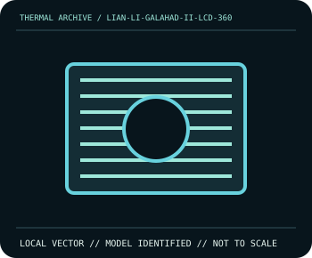

[ INDIVIDUAL COMPONENT // COOLING ]
LIAN LI Galahad II LCD 360
360 mm AIO, 2.88-inch IPS 480×480 display and 400 mm tubes.

IDENTIFICATION: Match complete model, suffix, revision and bundle before installation. Related variants can differ in dimensions, brackets, wiring, connector, and operating limits.
Manufacturer specifications
| Catalog subcategory | All In One Liquid Coolers |
|---|---|
| Exact model | LIAN LI Galahad II LCD 360 |
| Published specifications | 360 mm AIO, 2.88-inch IPS 480×480 display and 400 mm tubes. |
| Compatibility and mounting | LGA1700/1200/115x/2066/2011(-3), AM5/AM4; fan/control wiring varies by exact bundle SKU. |
| Connector and electrical limitations | Display requires USB 2.0/SATA on documented harness; fan and 5 V ARGB wiring is bundle-specific. |
Safe installation and maintenance
Sealed liquid cooler: do not open or refill. Disconnect power and hold fan blades still while cleaning; inspect tubes, radiator and joints for leaks or damage. Stop use if coolant appears.
- Follow the exact manufacturer manual for this model and host; do not interchange similar-looking parts or hardware.
- After service, verify pump/fan operation and temperature behavior under monitored conditions before normal workload.
Manufacturer source
- lian-li.com — LIAN LI Galahad II LCD 360 product informationManufacturer specifications; verify current revision-specific manual and compatibility details before installation.
This static catalog entry is an identification aid, not a compatibility guarantee; ratings can vary by revision or SKU.